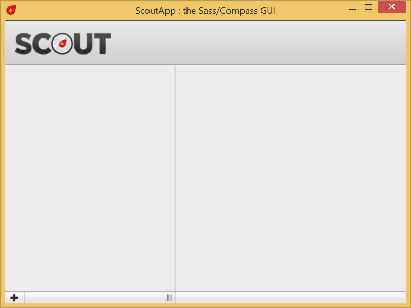
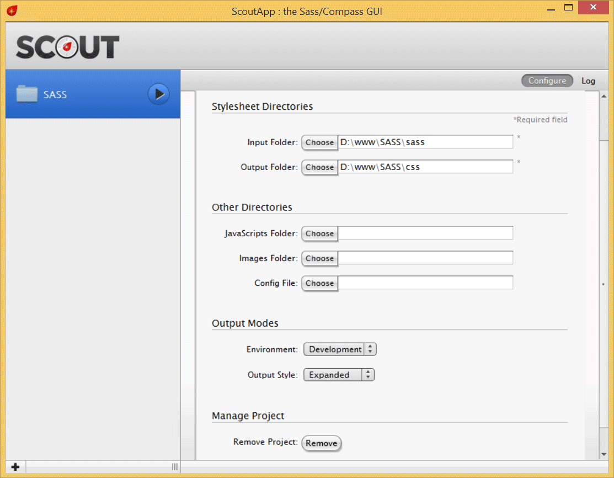

SASS
Учебник SASSИспользование Scout
Scout — это бесплатная программа сделанная с помощью Adobe Air, по этой причине отличается заметной неторопливостью в работе.
Scout позволяет компилировать Sass-файлы в CSS без установки каких-то дополнительных утилит.
И без командной строки.
Скачайте программу по этому адресу и установите её.
mhs.github.io/scout-app/
Поначалу Scout поражает своей простотой.
Пустой экран с логотипом и маленьким плюсиком в левом нижнем углу.
Его то и нужно нажать.
После нажатия на плюс вы добавляете проект в окно.
Теперь можно задать папку где располагаются Sass-файлы и папку, в которую будут сохраняться скомпилированные CSS-файлы.
Scout поддерживает несколько методов форматирования кода, выбор зависит от настроек конфигурации в блоке Output Modes (режимы вывода).
Development (разработка) — при создании CSS в каждое правило вставляется комментарий, из какого места Sass-файла данное правило получено.
Production (публикация) — в этом режиме комментарии отключаются.
Nested (с вложениями) — правила с вложенными селекторами сдвигаются вправо относительно родительского селектора.
Expanded (расширенный) — традиционный вывод стилевых правил. Все селекторы равнозначны и выводятся в едином виде.
Compact (компактный) — каждый селектор выводится на отдельной строке, все стилевые правила выводятся в одну строку.
Compressed (сжатый) — все стилевые правила выводятся в одну единственную строку.
Для компиляции достаточно нажать на стрелку возле имени проекта.
При возникновении каких-то ошибок они будут отображаться в окне Log.
Преимуществом Scout является то, что программа отслеживает изменение файлов в реальном времени и обновляет существующие стили автоматически.
Scout для своей работы требует наличие установленной Java и при компиляции файлов может вызвать ошибку.
Это происходит, если Java на компьютере нет или путь к Java не совпадает с настройками Scout.